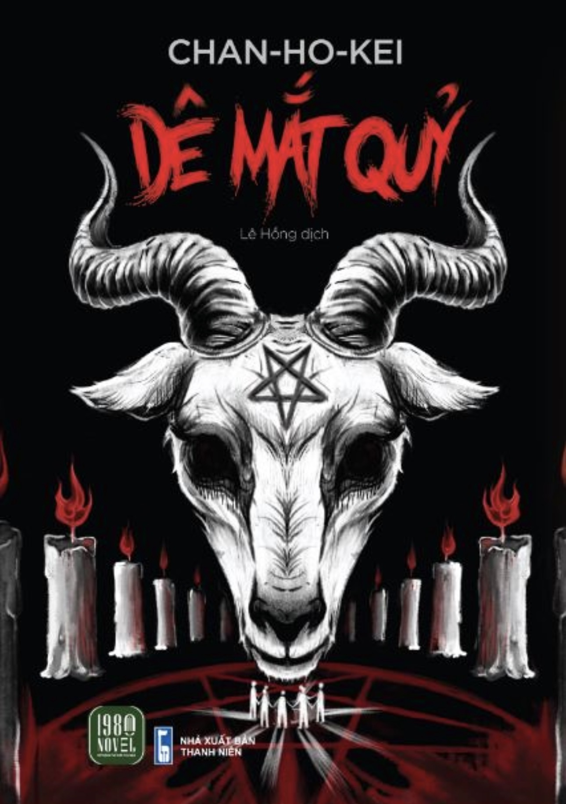

REVIEW SÁCH
Dê mắt quỷ
Nhận xét của mình
Cuốn này mình không biết diễn tả sao nữa, có twist nhưng mà cũng không đặc biệt lắm vì tình tiết truyện đã rất gay cấn rồi nên mình không ấn tượng cái twist lắm. Nhưng câu chuyện khá ảo, có thể là rất ảo, mình nghĩ mình thích sự logic nên mình thấy đọc cuốn này ảo quá. Nhưng rất kinh dị nha, cách hành văn của Chan Ho Kei khiến cho những tình tiết trở nên dồn dập, cứ tưởng như mình đang xem phim và những cái diễn biến cảm xúc của nhân vật mình có thể thấy rõ. Cái tên sách “dê mắt quỷ” cũng là 1 yếu tố trong truyện, nó cũng mang 1 chút kiến thức từ sách kinh thánh (mình đã có 1 thời gian ngắn tìm hiểu về kinh thánh). Mình nghĩ bạn nào thích kinh dị, những yếu tố ma quỷ thì nên đọc nha
🛍️ Tìm mua cuốn sách
Bạn có thể tham khảo giá tại các nhà sách online: